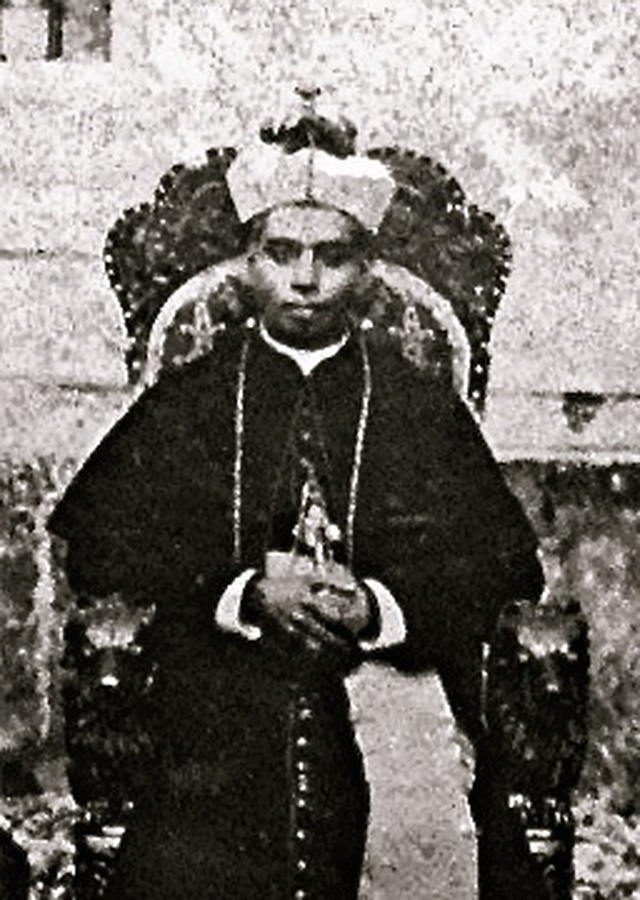
Mar Augustine Kandathil
1874 – 1956Baptized at Chempu Parish
Mar Augustine Kandathil
Born on August 25, 1874, in the devout Kandathil family of Chempu and baptized at St. Thomas Church, Mar Augustine Kandathil made history in 1923 when Pope Pius XI elevated him as the very first indigenous Metropolitan Archbishop of India and head of the Syro-Malabar Catholic Hierarchy. Over his four transformative decades of leadership, he founded the Congregation of the Sisters of Nazareth (CSN) in 1948, pioneered education, and guided the Church into a golden era before entering eternal rest in 1956.
Parish Vicars & Spiritual Shepherds
Honoring the present and former reverend fathers who shepherd and sanctify our parish community across generations.
Priests & Religious Sisters from Our Parish
Honoring the revered priests and religious sisters born and spiritually nurtured in the blessed soil of Chempu parish, now consecrated in lifelong service to God and humanity.
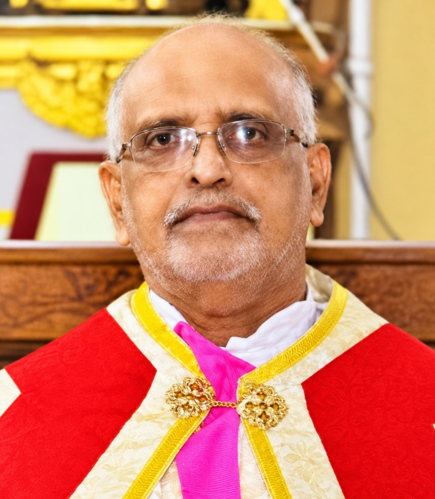
Rev. Fr. John Therezhathu
Devoted pastoral and religious ministry in the Carmelites of Mary Immaculate (CMI) congregation
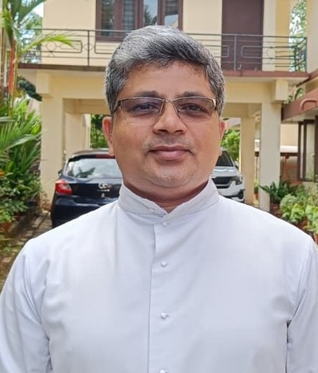
Rev. Fr. Jacob Puthenpura
Ordained on 18 April 2007; dedicated pastoral shepherd and priest ministering in the Diocese of Bijnor
Rev. Fr. Tony Blayil
Consecrated missionary and pastoral ministry in the Rogationists of the Heart of Jesus (RCJ) congregation
Rev. Fr. Joseph Chirayil
Consecrated Eucharistic and pastoral ministry in the Missionary Congregation of the Blessed Sacrament (MCBS)
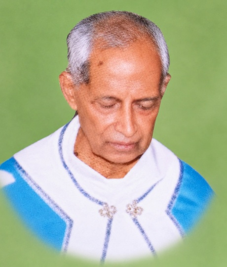
Rev. Fr. George Kandathil
Dedicated pastoral shepherd and consecrated priest from the historic Kandathil family, Chempu, ministering in faithful sacramental service.
Sr. Preethy Varghese
First Profession of Vows (ആദ്യ വ്രത വാഗ്ദാനം): 01/11/1994. Dedicated in lifelong religious service and compassionate care in the Sisters of St. Charles Borromeo (SCCG)
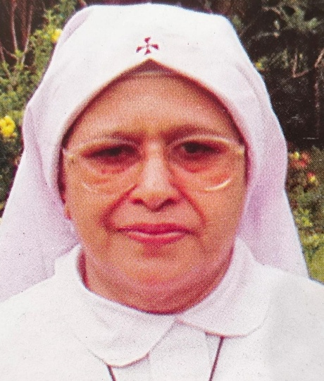
Rev. Sr. Dr. Claris
Dedicated consecrated life and distinguished intellectual & pastoral service in the Sisters of the Destitute (SD) from Kandathil family, Chempu.
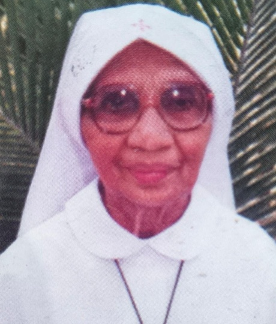
Rev. Sr. Stephiny
Lifelong consecrated religious devotion, prayer, and compassionate service in the Sisters of the Destitute (SD) from Kandathil family, Chempu.
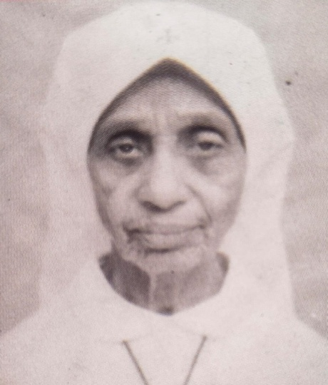
Rev. Sr. Luciya
Venerable pioneer religious sister from the historic Kandathil family, consecrated in selfless apostolic prayer and charity in the Sisters of the Destitute (SD).
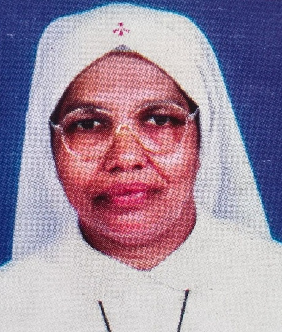
Rev. Sr. Clemancy
Devoted religious sister dedicated to humble Christian charity, prayer, and service in the Sisters of the Destitute (SD) from Kariyil Puthenpura family, Chempu.
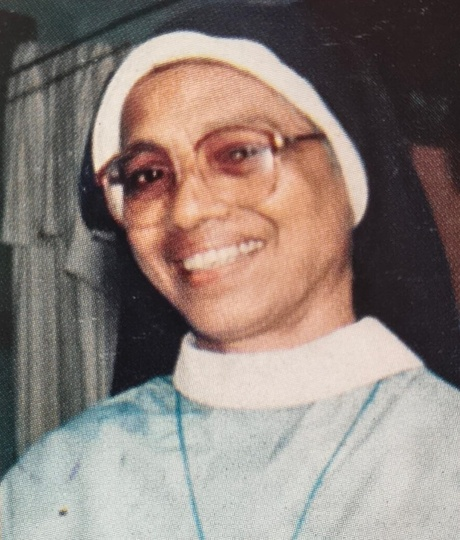
Rev. Sr. Austin
Lifelong consecrated religious sister from Kandathil family, Chempu, dedicated to joyous gospel witness, pastoral care, and prayer.
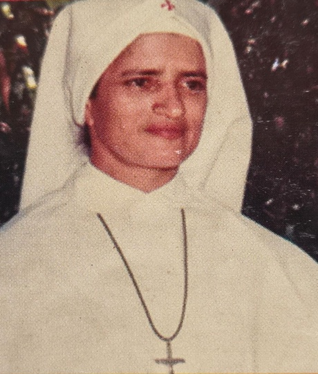
Rev. Sr. Alexius
Devoted religious sister from the esteemed Therezhathu family, consecrated in compassionate healing, prayer, and service in the Sisters of the Destitute (SD).
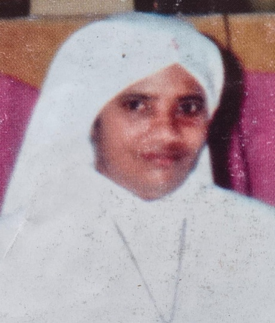
Rev. Sr. Alex Theresa
Reverend religious sister from Therezhathu family, Chempu, consecrated in lifelong apostolic devotion, charity, and prayer in the Sisters of the Destitute (SD).
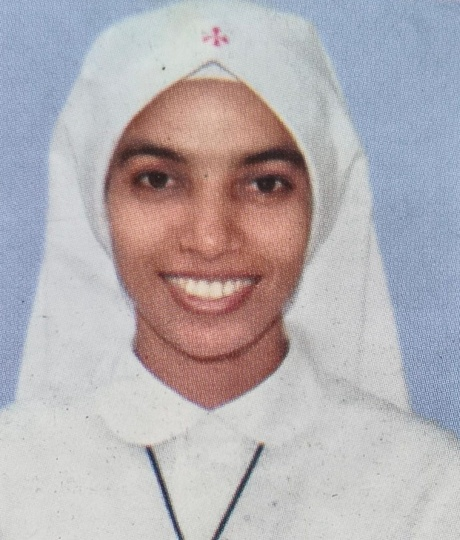
Rev. Sr. Rani Grace
Consecrated in joyous religious witness, radiant pastoral service, and prayer in the Sisters of the Destitute (SD) from Kariyil MariyaBhavan, Chempu.
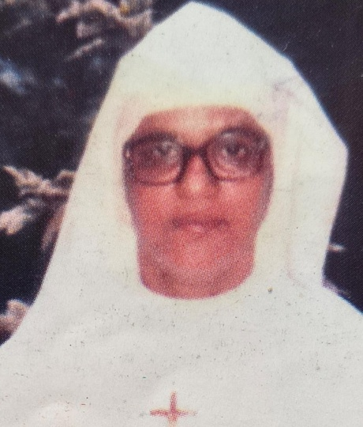
Rev. Sr. Betty Mathew
Dedicated to lifelong religious contemplation, faithful prayer, and compassionate Christian ministry from Chempu parish.
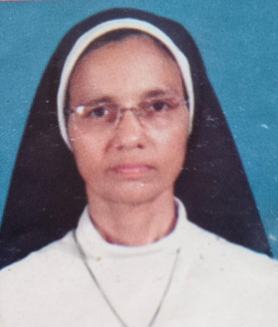
Rev. Sr. Ani Grace
Consecrated religious sister from the Poovathingal family, dedicated to faithful apostolic ministry, teaching, and prayer.
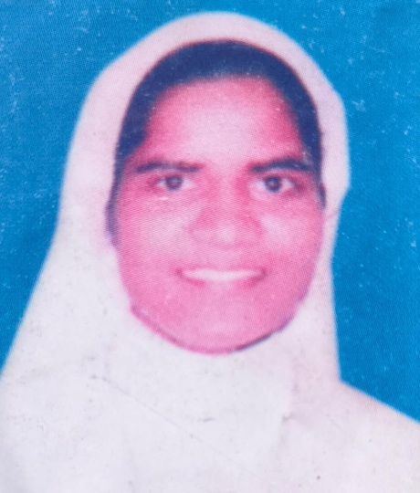
Rev. Sr. Jophin
Dedicated to lifelong consecrated religious life, apostolic prayer, and compassionate Christian service from Azhikakathu family, Chempu.
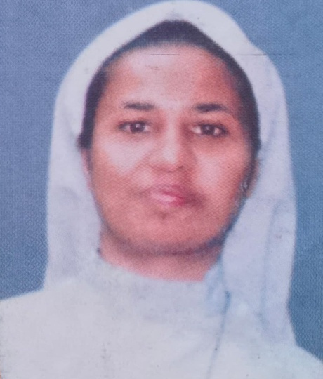
Rev. Sr. Jansilin Francis
Lifelong consecrated religious devotion, faithful prayer, and dedicated Christian service from Chalumkadavil family, Chempu.
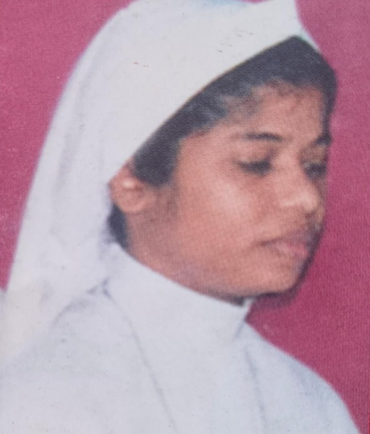
Rev. Sr. Liny Francis
Devoted religious sister from Chalumkadavil family, Chempu, consecrated in lifelong apostolic prayer, humility, and Christian charity.
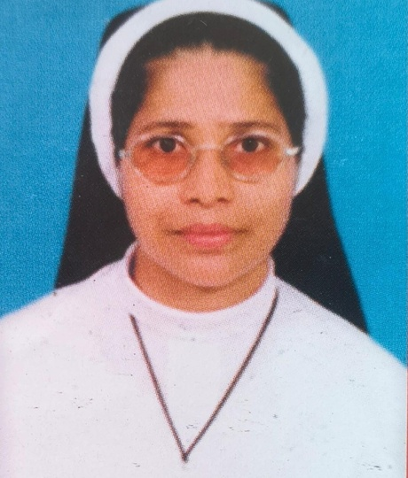
Rev. Sr. Treesa Jose
Consecrated in joyous religious witness, radiant prayer, and compassionate pastoral service from Kunnathu Kuthirathara family, Chempu.
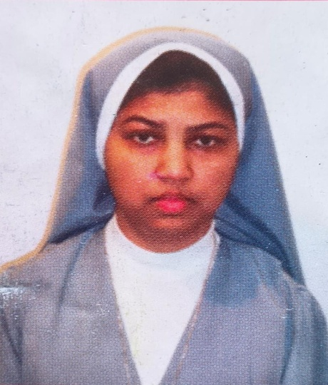
Rev. Sr. Mary Rosely
Lifelong consecrated religious devotion, prayerful contemplation, and faithful Christian witness from Thachappallil family, Chempu.
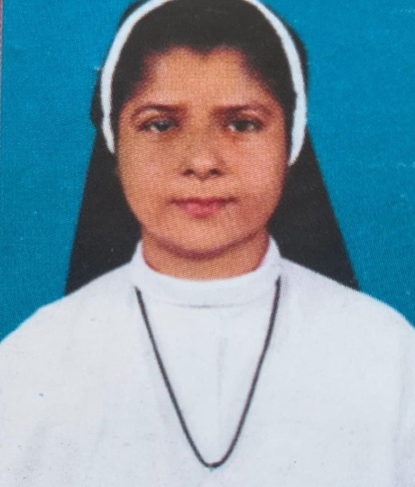
Rev. Sr. Jessin
Devoted religious sister from Kaitholil family, Chempu, consecrated in joyous apostolic witness, compassionate charity, and prayer.
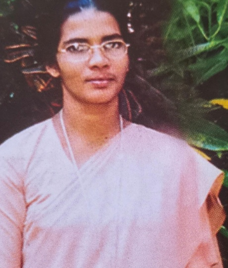
Rev. Sr. Ancy John
Lifelong consecrated religious devotion, prayerful service, and humble Christian witness from Mundackal family, Chempu.
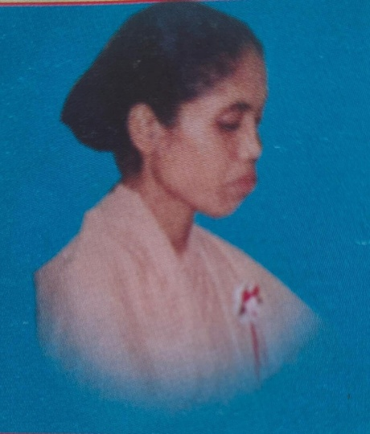
Rev. Sr. Mercy Paul
Consecrated in contemplative prayer, pastoral charity, and selfless religious witness from Kollammattel family, Chempu.
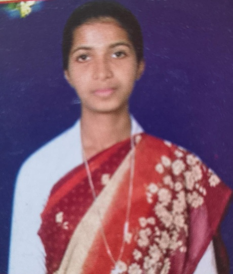
Rev. Sr. Divya
Devoted religious sister from Mundackal family, Chempu, consecrated in lifelong apostolic devotion, charity, and prayer in the Sisters of the Destitute (SD).
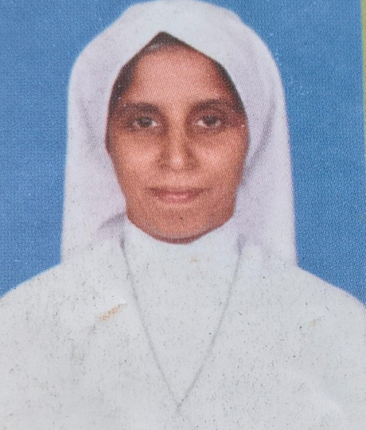
Rev. Sr. Titty Fransis
Consecrated in joyous religious witness, radiant prayer, and compassionate pastoral service from Kandathil family, Chempu.
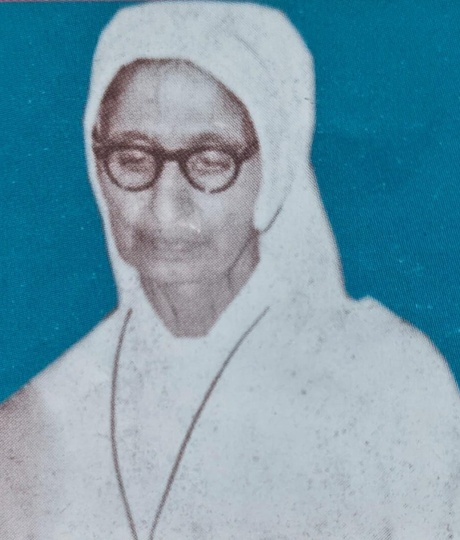
Rev. Sr. Colomba
Venerable pioneer religious sister from the historic Kandathil family, consecrated in selfless apostolic prayer, wisdom, and lifelong service.
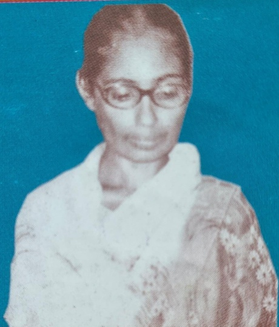
Rev. Sr. Daisy
Dedicated to lifelong consecrated religious life, apostolic prayer, and compassionate Christian service from Kandathil family, Chempu.
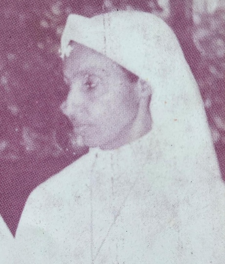
Rev. Sr. Jemma
Venerable pioneer religious sister from the historic Kandathil family, consecrated in lifelong apostolic devotion, prayer, and loving Christian service.
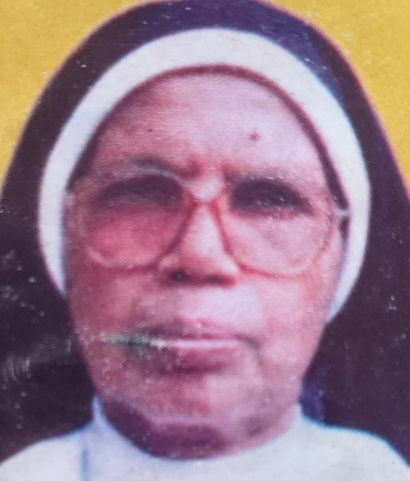
Rev. Sr. Gabriel
Venerable senior religious sister from Maniyalayil family, Chempu, consecrated in lifelong prayer, wisdom, and devoted apostolic service.
Pray for Consecrated Vocations
“The harvest is plentiful, but the laborers are few; therefore pray earnestly to the Lord of the harvest to send out laborers into His harvest.” (Luke 10:2)